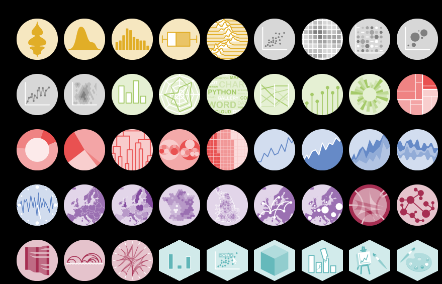
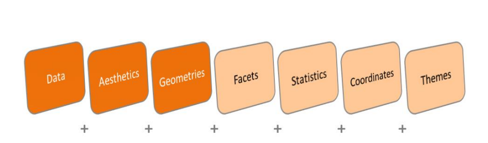

2 O pacote ggplot2
o pacote ggplot2, pelo estatístico neozelandês Hadley Wickham, oferece uma poderosa linguagem gráfica para criar gráficos elegantes e complexos. Sua popularidade na comunidade R explodiu nos últimos anos e é – hoje - a principal implementação da gramática de gráficos para o R. Geralmente baseado na Gramática de Gráficos de Leland Wilkinson.
Em sua essência, a função do ggplot2 é construir um gráfico camada por camada.
O ggplot2 permite criar gráficos que representam dados numéricos e categóricos univariados e multivariados de forma direta. O agrupamento pode ser representado por cor, símbolo, tamanho e transparência. A criação de parcelas de trellis (isto é, condicionamento) é também relativamente simples.
Dentre suas principais características, as vantagens de utilização este pacote para a construção de gráficos são:
- Gráficos visualmente mais bonitos;
- Fácil personalização (é mais simples ajustar o gráfico conforme suas necessidades);
- A estrutura padronizada das funções facilita o aprendizado e a aplicação;
- As diferenças no código entre diferentes tipos de gráficos são mínimas.
2.1 Galerias
Existem inúmeras possibilidades de construção de gráficos com o ggplot2 para a visualização de dados utilizando o R. Ele permitem criar praticamente qualquer tipo de gráfico.
Algumas demonstrações exemplos podem ser verificados em https://www.r-graph-gallery.com/portfolio/ggplot2-package/
2.2 Gramática dos gráficos

O ggplot fornece uma estrutura unificadora (uma gramática) para descrever e especificar gráficos. Cria gráficos de dados de forma incremental a partir de pequenos pedaços de código.
- Data = Dados
- Aesthetics = Estética ⇒ Cores, titulo, legendas, etc
- Geometries = Geometria ⇒ Tipo de Gráfico
- geom_bar()
- geom_col()
- geom_map()
- geom_point()
- Facets = Facetas ⇒ Gráficos em grade para comparação
- facet_grid()
- facet_wrap()
- Statistics = Estatísticas ⇒ Estáticas como média, contagem, entre outros.
- stat_count()
- stat_sum()
- stat_density()
- Coordinates = Coordenadas ⇒ Como serão mostradas as coordenadas x e y
- coord_flip()
- coord_fixed()
- coord_cartesian()
- Themes = Temas ⇒ Mais outra forma de personalização
- theme_grey()
- theme_gray()
- theme_bw()
- theme_linedraw()
- theme_light()
2.3 Instalação do pacote ggplot2
Para começar a construir os primeiros gráficos utilizando o pacote ggplot2, é necessário, primeiramente, instalar e carregar o pacote antes de rodar os gráficos
install.packages("ggplot2")
library(ggplot2)